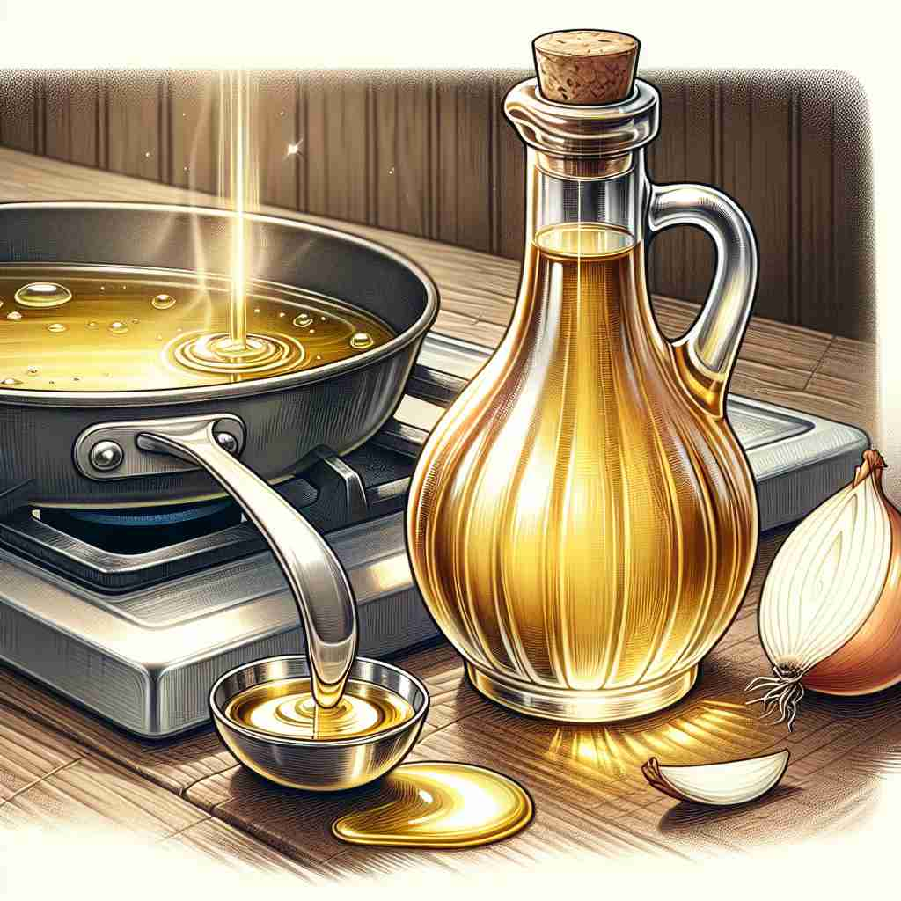

💬 She is adding cooking oil to the pan for frying.

💬 The man is checking the engine oil in the car.
💬 The therapist applies massage oil to relax the client's muscles.

💬 She is adding cooking oil to the pan.
🔈 [ɒɪl]
🗝️ n. a thick liquid that does not mix with water, obtained from plants or minerals
🖼️ 在一个阳光明媚的田园里，一位农民正在收集橄榄。他熟练地将橄榄放入压榨机中，取出清澈的橄榄油。站在一旁观看的游客好奇地观察着这不与水混合的浓厚液体，了解了'oil'作液体时的含义。
🔍 记忆'oil'时，想象一种不与水混合的液体。这个核心概念可以延伸到涂抹、石油、油画，甚至比喻使情况更顺畅。所有这些含义都与原始的'油'概念有关，通过这种联系，你可以更容易理解和记住'oil'的多重用法。
💬 She is adding cooking oil to the pan for frying.
💬 The man is checking the engine oil in the car.
💬 The therapist applies massage oil to relax the client's muscles.
💬 She is adding cooking oil to the pan.
🌳 由词根 "ol" 演变而来，通常指液态形式的物质，尤其用于指代石油或其他润滑、燃烧用的液体。
💡 可以通过联想 "oil" 流动的液体性质来记忆，通常与能量、润滑相关，比如汽车需要的石油。
🗝️ v. to apply oil to something
🖼️ 在一个忙碌的厨房里，一位厨师正在为铁锅涂上薄薄的一层油，以防食物粘锅。她小心翼翼地转动锅柄，确保油均匀覆盖，展示了'oil'作动词时的含义是给某物涂抹油。
💬 You should oil the hinges to stop them from squeaking.
❓ 使用核心含义中的液体进行操作
🗝️ n. petroleum
🖼️ 在一个繁忙的加油站，司机们排队为汽车加油。工作人员熟练地将油枪插入油箱，为车辆注入汽油。这场景显示了'oil'作为'petroleum'即石油的含义。
💬 The country's economy relies heavily on oil exports.
❓ 特指从地下开采的矿物油
🗝️ n. a painting made using oil paints
🖼️ 在一个静谧的画廊中，游客们正在欣赏墙上一幅幅色彩浓烈、充满质感的油画作品。每一幅油画都在讲述不同的故事，展示了'oil'作为使用油画颜料制作的画作的含义。
💬 The museum has a collection of beautiful oils by famous artists.
❓ 使用油基颜料创作的艺术品
🗝️ v. to make a situation better or more pleasant
🖼️ 在一个热闹的派对上，主持人觉得气氛有些紧张，便巧妙地讲了一个笑话，缓和了气氛。客人们纷纷放松下来，愉快地交谈。这一刻展示了'oil'表示通过某种方式改善或使情况更加愉快的含义。
💬 His calm demeanor helped to oil the negotiations.
❓ 比喻用油使机器运转更顺畅